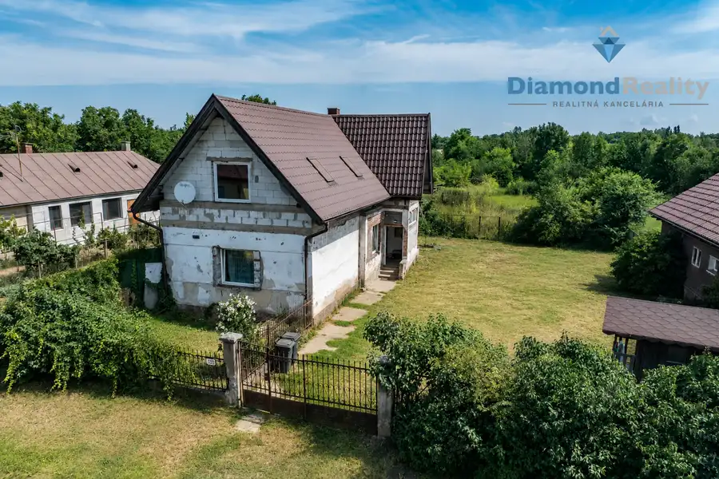

Rodinný dom s vlastným podnikaním a 5 Apartmánmi v obci Budimír
Budimír
- Plocha200 m²
- StavNovostavba
- VlastníctvoOsobné
O nehnuteľnosti
🏡 3-izbový rodinný dom s vlastným podnikaním a 5 apartmánmi – BudimírMgr. Kamil Špegár | Diamond Reality ponúka na predaj zaujímavú nehnuteľnosť v obci Budimír, okres Košice-okolie, ktorá spája komfortné súkromné bývanie s možnosťou vlastného podnikania a pravidelného príjmu z prenájmu.✨ 3-izbová obytná časť pre majiteľa + 5 samostatných, kompletne vybavených apartmánov.Nehnuteľnosť je vhodná pre klienta, ktorý chce bývať vo vlastnom dome a zároveň využívať samostatnú časť na krátkodobý alebo dlhodobý prenájom.💰 Cena: 389 000 €📐 Úžitková plocha domu: 200 m²🌳 Pozemok: 855 m²🏠 Zastavaná plocha: 229 m²📅 Rok výstavby a kolaudácie: 2015🚗 7 parkovacích miest🏠 Súkromné bývanie pre majiteľaObytná časť domu ponúka príjemné a funkčné zázemie pre každodenné bývanie.Nachádza sa tu obývacia izba s krbom prepojená s kuchyňou na mieru so vstavanými spotrebičmi, spálňa, detská izba, pracovňa, kúpeľňa a technické zázemie s podkrovím.🌿 Z obývacej izby je priamy vstup na priestrannú celoročnú terasu s podlahovým kúrením a fóliovým uzatvorením, ktorá plynulo nadväzuje na súkromnú záhradu.🔥 Krb s výmenníkom je napojený na podlahové kúrenie celého domu a predstavuje alternatívny zdroj vykurovania k tepelnému čerpadlu.💼 Výnosová časť – 5 samostatných apartmánovSamostatnú podnikateľskú časť tvorí 5 kompletne zariadených apartmánov, ktoré sú pripravené na okamžité využitie.Každý apartmán má:🚿 vlastnú kúpeľňu🚽 vlastné WC📺 televízor🌤️ samostatný výstup na terasuHostia majú zároveň k dispozícii:🍳 spoločnú kuchyňu🧊 chladničku♨️ indukčnú varnú dosku🧺 práčku🛎️ priestor recepcie🔑 Apartmány sú pripravené na krátkodobý prenájom prostredníctvom Booking.com alebo Airbnb, prípadne na dlhodobé ubytovanie.💡 Ďalšie možnosti podnikateľského využitiaNehnuteľnosť ponúka viac možností využitia než len ubytovanie. Vďaka samostatným priestorom, recepcii, sociálnemu zázemiu a parkovaniu môže byť po potrebných úpravách vhodná napríklad na:🦷 súkromnú zubnú ambulanciu🩺 ambulanciu, fyzioterapiu alebo rehabilitáciu💆 masáže, wellness či beauty služby💇 kaderníctvo alebo kozmetický salón💼 kancelárie alebo sídlo firmy👩🏫 školiace a vzdelávacie centrum💻 coworking alebo prenájom pracovných priestorov🏡 firemné či dlhodobé ubytovanie🛎️ penzión alebo apartmánový dom🔑 Jedna nehnuteľnosť – viac možnostíVýhodou je kombinácia vlastného bývania, samostatných priestorov a 7 parkovacích miest, čo umožňuje prispôsobiť objekt rôznym podnikateľským zámerom.Konkrétne využitie je potrebné prispôsobiť príslušným stavebným, hygienickým a prevádzkovým podmienkam.📈 Zaujímavý investičný potenciálPodľa údajov k nehnuteľnosti dosahuje príjem z prenájmu približne 3 500 € mesačne, čo pri uvedenej predajnej cene predstavuje približne 10 % ročný hrubý výnos.💶 Výhodou je teda možnosť spojiť vlastné bývanie s príjmom z piatich samostatných apartmánov v rámci jednej nehnuteľnosti.⚡ Technické vybavenie a nízke prevádzkové nákladyNehnuteľnosť disponuje:💧 vlastnou studňou♻️ domovou čističkou odpadových vôd – ČOV🌡️ tepelným čerpadlom🔥 krbom s výmenníkom napojeným na podlahové kúrenie🌐 rýchlym optickým internetom💧 Vlastná studňa a ČOV zároveň eliminujú náklady na vodné a stočné.Pri pozemku sú pripravené prípojky na:🚰 verejný vodovod🔥 plyn🌳 Pozemok a parkovanieDom stojí na rovinatom pozemku s výmerou 855 m².☀️ Orientácia nehnuteľnosti je južná, juhovýchodná a juhozápadná.🚗 Priamo pred domom je k dispozícii až 7 parkovacích miest, čo predstavuje výraznú výhodu nielen pre majiteľa, ale aj pre hostí alebo klientov.📍 Budimír – výborná dostupnosť do KošícNehnuteľnosť sa nachádza v obci Budimír, okres Košice-okolie.🚘 Výhodou je dobrá dostupnosť do Košíc a rýchle napojenie na diaľnicu, vďaka čomu je lokalita vhodná tak na trvalé bývanie, ako aj na podnikanie.🔑 Bývajte a podnikajte na jednej adreseTáto nehnuteľnosť ponúka netradičnú kombináciu vlastného rodinného bývania a samostatnej výnosovej časti s piatimi apartmánmi.🏡 komfortné bývanie💼 vlastné podnikanie🛏️ 5 zariadených apartmánov🌿 súkromná záhrada a celoročná terasa🚗 7 parkovacích miest📈 potenciál pravidelného príjmu💰 Predajná cena: 389 000 €Fotografie sú upravené AI. Rodinný dom je potrebné ešte dokončiť podľa vlastných predstáv.📞 Dohodnite si obhliadkuV prípade záujmu o bližšie informácie alebo osobnú obhliadku ma neváhajte kontaktovať. Rád vám nehnuteľnosť predstavím osobne.👤 Mgr. Kamil Špegár💎 Diamond Reality📱 +421 905 982 116📧 spegar@diamondreality.sk🌐 www.kamilspegar.sk🏡 Bývanie a podnikanie na jednom mieste – nehnuteľnosť, ktorá môže byť vaším domovom aj zdrojom príjmu.
Parametre
| Druh | Rodinný dom |
|---|---|
| Dátum zverejnenia | 8. 9. 2026 |
| Plocha pozemku | 855 m² |
| Stav nehnuteľnosti | Novostavba |
| Telekomunikácie | Internet |
| Typ | Predaj |
| Vlastníctvo | Osobné |
| Vybavenie | Terasa |
| Vykurovanie | Podlahové |
| Zastavaná plocha | 229 m² |
| Úžitková plocha | 200 m² |
Kde to je


Mohlo by Vás zaujímať
 BytNové10
147 000 €Ponúkame 1 izbový byt na Predaj, Hemerková ul. KVP
Sídlisko KVP, Košice
1-izbový36 m²
🏡 Mgr. Kamil Špegár – Diamond Reality ponúka na predaj 1-izbový byt s priestrannou loggiou na Hemerkovej ulici, Košice – Sídlisko KVP.Ponúkam na…
BytNové10
147 000 €Ponúkame 1 izbový byt na Predaj, Hemerková ul. KVP
Sídlisko KVP, Košice
1-izbový36 m²
🏡 Mgr. Kamil Špegár – Diamond Reality ponúka na predaj 1-izbový byt s priestrannou loggiou na Hemerkovej ulici, Košice – Sídlisko KVP.Ponúkam na…
 Chalupa, rekreačný domčekNové10
65 000 €Ponúkam na predaj Chatu so záhradou, Košická Polianka
Košická Polianka
86 m²
🏡 Únik z mesta len pár minút od Košíc – miesto, kde čas plynie pomalšiePonúkame Vám na predaj útulnú murovanú chatu v nádhernom a pokojnom prostredí…
Chalupa, rekreačný domčekNové10
65 000 €Ponúkam na predaj Chatu so záhradou, Košická Polianka
Košická Polianka
86 m²
🏡 Únik z mesta len pár minút od Košíc – miesto, kde čas plynie pomalšiePonúkame Vám na predaj útulnú murovanú chatu v nádhernom a pokojnom prostredí…

DomRezervované10 120 000 €Ponúkam na predaj 3 izbový rodinný dom Veľká ida Veľká Ida 260 m² 🏡 "REZERVOVANÝ" Na predaj priestranný rodinný dom s pozemkom 2 141 m² – Veľká IdaSpoločnosť Diamond Reality v exkluzívnom zastúpení…